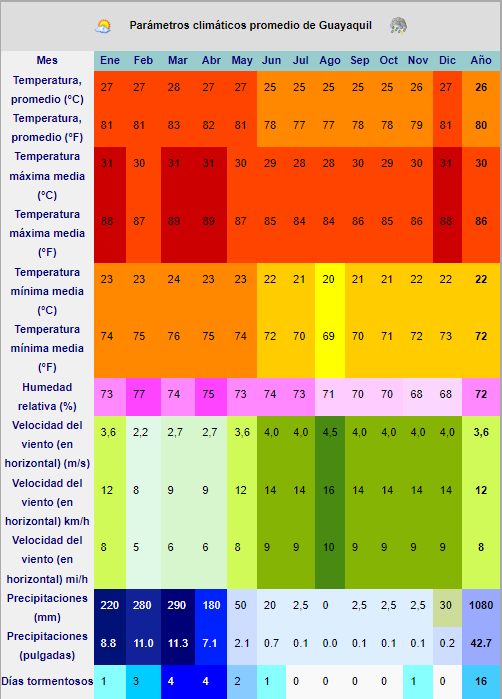

Guayaquil :
La geografía de Guayaquil está caracterizada por su posición costera en la parte noroccidental de América del Sur, en la región litoral deEcuador y su ubicación entre el río Guayas y el estero Salado. La geografía de la ciudad, con su cercanía al océano y su condición de puerto, ha contribuido como un importante factor para hacer de Guayaquil la ciudad con mayor densidad poblacional de la República de Ecuador .
La ciudad de Guayaquil está ubicada en la parte noroeste de América del Sur, con pocos elevaciones y alejada de la Cordillera de los Andes. El poco relieve de la ciudad y del cantón está formado por cerros que atraviesan la ciudad y luego se unen a un sistema montañoso menor llamado "Chongón-Colonche" al oeste de la ciudad. La red fluvial del Guayas cerca a Guayaquil por el este, mientras que es atravesada y cercada al oeste por el Estero Salado. Tiene fácil acceso al océano Pacífico por medio del Golfo de Guayaquil.
La ciudad se encuentra situada en la cuenca baja del río Guayas, que nace en las provincias de Pichincha y de Cotopaxi, y desemboca en el Golfo de Guayaquil en el Océano Pacífico. Recibe las aguas de los ríos Daule y Babahoyo. El Daule y sus afluentes bañan las provincias de Manabí, Los Ríos y Guayas. El Babahoyo está formado por el río Yaguachi, y éste por la unión de los ríos Chimbo yChanchán. Recorre las provincias de Chimborazo, Los Ríos y Guayas. La cuenca del Guayas es la más grande de la vertiente del Pacífico, con 40 000 km² y una extensa área de la costa ecuatoriana bañada por el río del mismo nombre y toda su red de afluentes
El clima de Guayaquil es el resultado de la combinación de varios factores. Por su ubicación en plena zona ecuatorial, la ciudad tiene una temperatura cálida durante casi todo el año. No obstante, su proximidad al Océano Pacífico hace que las corrientes de Humboldt (fría) y de El Niño (cálida) marquen dos períodos climáticos bien diferenciados. Una temporada húmeda ylluviosa (período en el que ocurre el 97% de la precipitación anual) que se extiende enero a mayo (corresponde al verano austral); y la temporada seca que va desde junio a diciembre (que corresponde al invierno austral). Debido a que se ubica en plena zona ecuatorial, la ciudad tiene temperaturas cálidas durante todo el año, la temperatura promedio oscila entre los 25 y 28 °C.
 El Puerto Marítimo de Guayaquil está localizado en la costa occidental de América del Sur, en un brazo del mar, el Estero Salado, a diez Kilómetros al Sur del centro comercial de la ciudad del mismo nombre.
Ecuador es un país equidistante entre los dos extremos occidentales del continente americano.
Guayaquil, su principal puerto comercial, está ubicado dentro del golfo mismo nombre; siendo éste el más importante punto geográfico de la costa oeste de Sudamericana.
La fundación de la ciudad, el 25 de julio de 1538, fue obra de Francisco de Orellana. Los conquistadores españoles intentaron establecer un puerto en la región costera, enfrentándose a la resistencia nativa, especialmente de los huancavilcas que dominaban esa área. Guayaquil se convirtió en un punto central de la Real Audiencia de Quito. Los dominios de Guayaquil incluían gran parte de lo que hoy es la región Litoral del Ecuador. Mediante una Real cédula de Carlos III del 8 de diciembre de 1762, dirigida al Virrey Pedro Mesía de la Cerda, se nombró a Juan Antonio Zelaya y Vergara como el primer Gobernador de Guayaquil el 11 de octubre de 1763, cargo que desempeñó entre 1764 y 1772. Durante su mandato, se vivió el Gran Incendio de 1764.
Después de muchos años, las revueltas emancipadoras comenzaron a surgir en todo el continente americano. Tras varios intentos de independencia en la Real Audiencia, el 10 de agosto de 1809, se produjo una rebelión en Quito, que aunque no fue independentista, se conoce posteriormente como el "Primer Grito de Independencia". La rebelión fue sofocada un año después por las tropas leales a la corona española, que recuperaron la ciudad el 2 de agosto de 1810. El 9 de octubre de 1820, día de la Independencia de Guayaquil, comenzaron las guerras de independencia de la nación.
El 26 de julio de 1822, el libertador Simón Bolívar llegó a Guayaquil para reunirse con el libertador José de San Martín y decidir el futuro de la ciudad y su provincia, en el evento conocido como la célebre Entrevista de Guayaquil. La provincia fue oficialmente anexada a la Gran Colombia por decisión de ambos el 31 de julio de 1822.